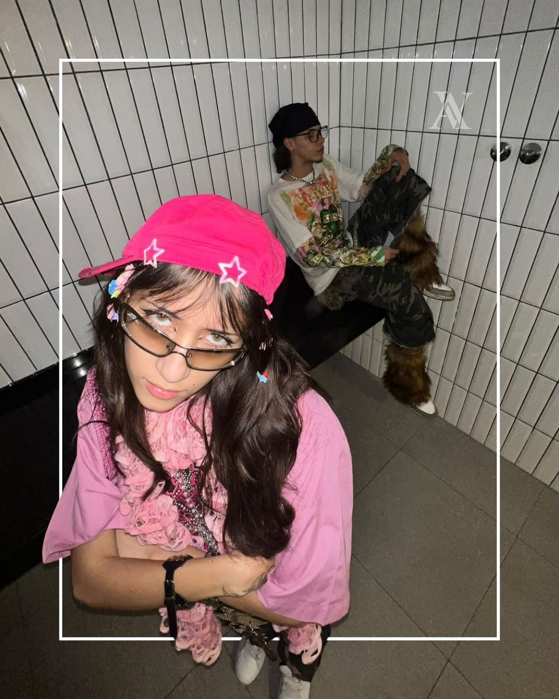
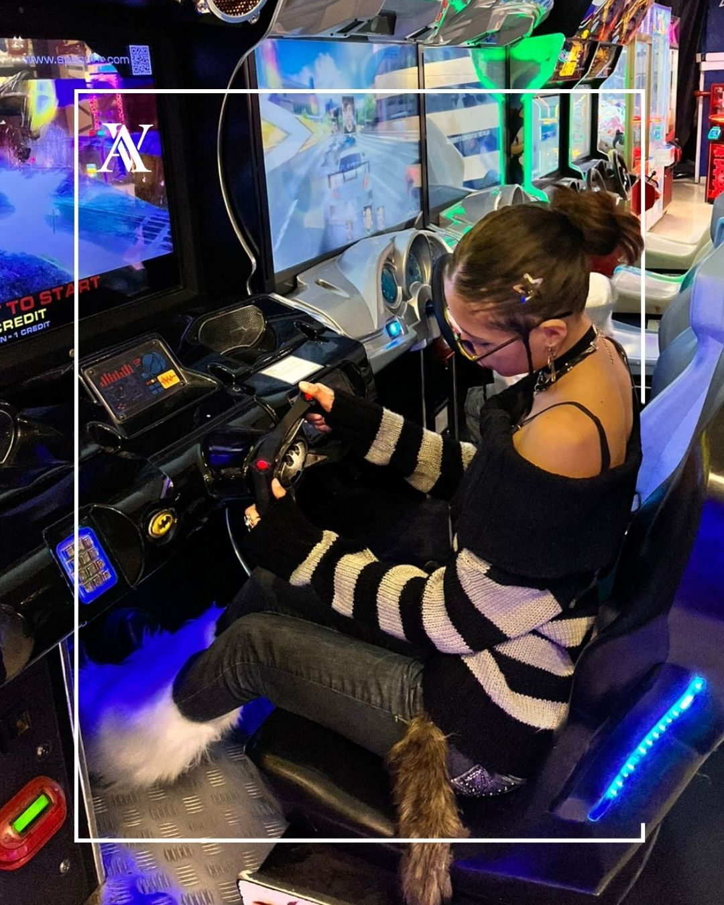

Encontrar algo que los demás todavía no ven
Soy Priscila y Arvel empezó como una forma de darle lugar a la ropa que me llamaba la atención, aunque no encajara en lo que estaba de moda.

Quería vestirme sin sentir que estaba siguiendo una fórmula
En 2019 empecé a recorrer ferias y a encontrar prendas que tenían algo especial: una tela, un calce, una estampa o simplemente una energía difícil de explicar. Muchas veces eran piezas que alguien había dejado atrás, pero yo podía imaginarles otra vida.
Me llevó a crear Arvel la necesidad de hacer algo propio con esos hallazgos. No quería que la ropa fuera descartable ni que todas las personas terminaran usando lo mismo. Quería seleccionar, probar, intervenir y construir un guardarropa con identidad.
Cómo se fue formando Arvel
- 012019
Buscar
Empecé seleccionando ropa de feria y segunda mano. Aprendí a mirar más allá de la primera impresión y a reconocer materiales, formas y detalles con potencial.
- 02Experimentar
Intervenir
Después llegaron los recortes, ajustes, encajes, herrajes y combinaciones. Cada prueba fue definiendo una manera propia de transformar las prendas sin borrar su historia.
- 03Compartir
Crear comunidad
Arvel creció al encontrar personas que también buscaban vestirse fuera de las reglas. Instagram, las clientas y cada custom ayudaron a construir este universo colectivo.
- 04Hoy
Seguir cambiando
Ahora conviven prendas seleccionadas, piezas intervenidas, drops pequeños y encargos personalizados. El proyecto cambia, pero la intención sigue siendo la misma: que nada se sienta genérico.


Selecciono, imagino y transformo
Busco prendas nuevas o recuperadas con una base interesante. Algunas ya funcionan tal como son y forman parte de la selección; otras necesitan un cambio para revelar todo lo que pueden ser.
Cuando intervengo una pieza, trabajo a partir de su material, su forma y la persona que va a usarla. Puedo modificar el calce, sumar capas, combinar textiles o incorporar detalles. El resultado no nace de copiar un diseño: nace de interpretar una intención.
- Selección de prendas nuevas y de segunda mano.
- Intervenciones y reconstrucciones manuales.
- Customs conversadas con cada persona.
- Drops pequeños y piezas con stock limitado.
“No quiero hacer ropa para encajar. Quiero encontrar y crear piezas que ayuden a mostrar quién sos.”
Arvel sigue creciendo como un archivo vivo de prendas, procesos, clientas e ideas. Cada drop suma una parte nueva sin repetir exactamente lo anterior.